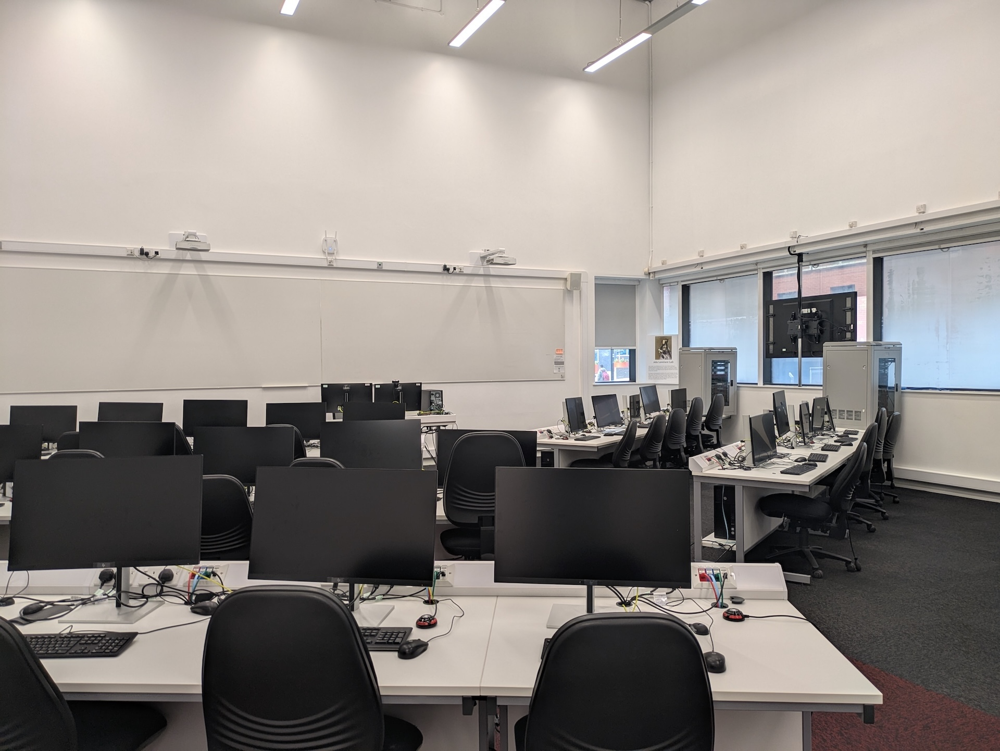
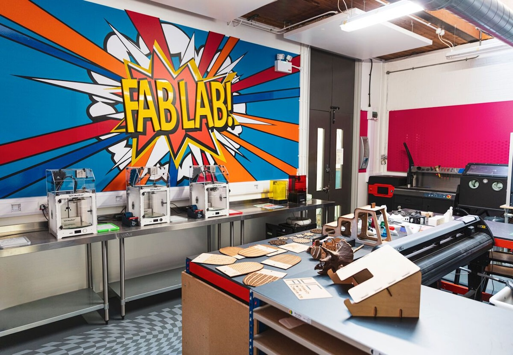
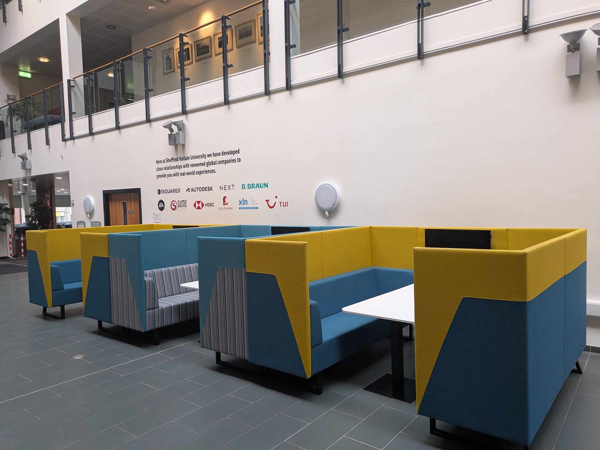
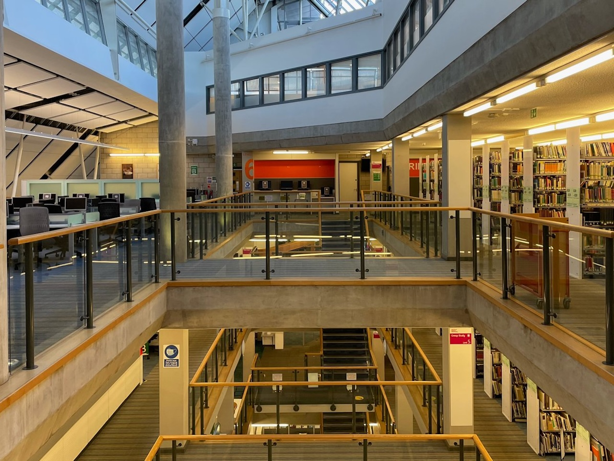
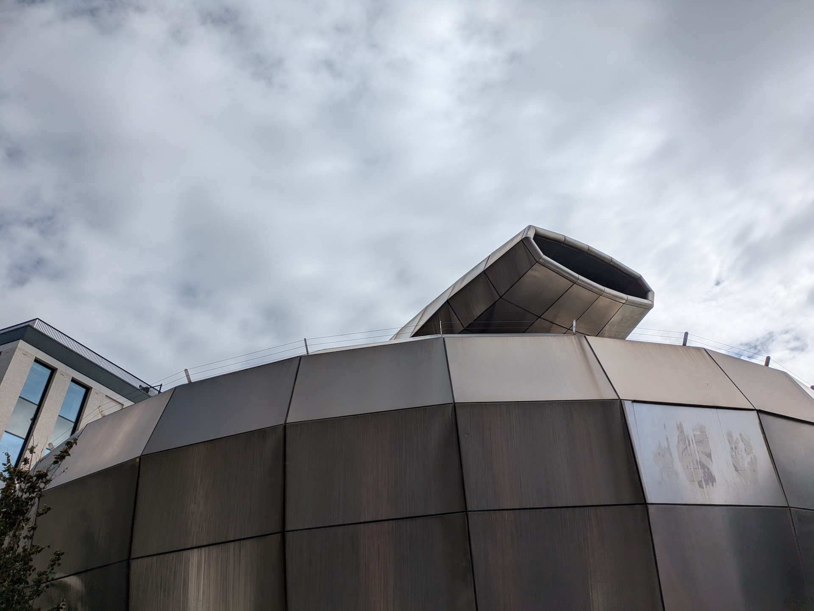
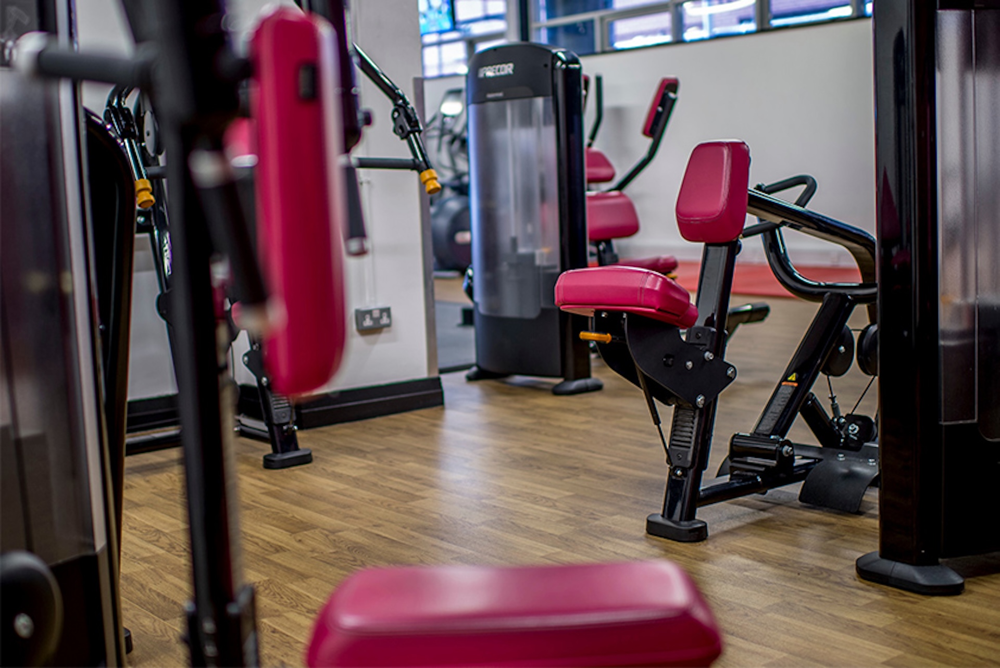
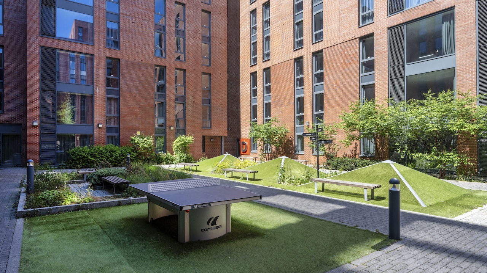

At Cantor College, we are committed to providing our students with the best possibleenvironment to learn, create, and innovate. Our state-of-the-art facilities aredesigned to support your academic journey and help you thrive in your chosen field.Whether you’re studying computing, design, or technology, our campus offerseverything you need to excel
Cantor College’s facilities are designed to enhance your learning experience andsupport your academic and personal growth. We invite you to explore our campus,discover our resources, and make the most of everything we have to offer.

Our computing labs are equipped with the latesthardware and software, providing you with the tools you need to develop your skillsin programming, cybersecurity, data science, and more. The labs are accessible24/7, ensuring you can work on your projects at any time that suits you
Our design studios offer a creative space for students in graphicdesign, digital media, and product design. Each studio is equipped with high-endgraphic tablets, professional-grade software, and large-format printers, allowing youto bring your ideas to life. The studios also feature collaborative spaces where youcan work with peers and faculty on group projects

Cantor College’s Innovation and Makerspace is ahub for creativity and invention. This facility is equipped with 3D printers, lasercutters, CNC machines, and other advanced prototyping tools. Whether you'reworking on a design project or developing a new tech product, this space providesthe resources to turn your concepts into reality
The Technology Sandbox is an experimental space wherestudents can explore the latest in VR, AR, and AI technologies. With access tocutting-edge devices and software, you’ll be able to experiment with emergingtechnologies and push the boundaries of what’s possible in your field.

Our campus features numerous collaborativelearning spaces designed to foster teamwork and creative problem-solving. Thesespaces are equipped with smartboards, video conferencing tools, and flexibleseating arrangements, making them ideal for group work, study sessions, orbrainstorming meetings
The Cantor College Library is a comprehensiveresource Centre offering an extensive collection of books, journals, and digitalresources related to computing, design, and technology. The library also providesquiet study areas, computer stations, and access to online databases, ensuring youhave the information you need at your fingertips.


The Student Hub is the social heart of our campus, providing aplace for relaxation and connection. Here, you’ll find a café, lounge areas, andrecreational facilities, making it the perfect spot to unwind between classes, meetwith friends, or join student-led activities and clubs
Our Career and Development Centre isdedicated to helping you plan your future. Offering career counseling, resumeworkshops, and job placement services, this Centre provides the support you needto transition from student to professional. The Centre also hosts regular employernetworking events and industry talks to help you build connections in your field.

We believe in nurturing both the mind and body.Our Fitness and Wellness Centre offers a fully equipped gym, exercise studios, anda range of fitness classes to help you stay healthy and active. The Centre alsoincludes wellness services such as yoga, meditation, and counseling to support youroverall well-being.
For those who choose to live on campus, Cantor Collegeoffers modern, comfortable housing options. Our residence halls provide asupportive community environment, with amenities like high-speed internet, studylounges, and common areas where you can relax and socialize.
